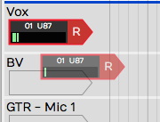
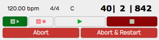
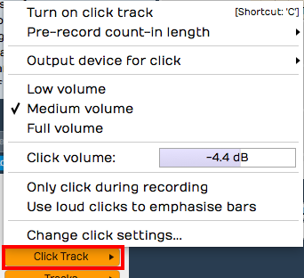
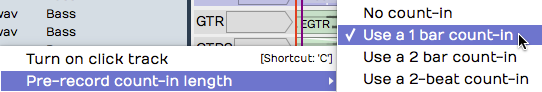
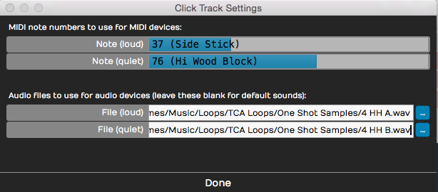
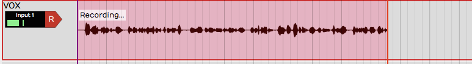
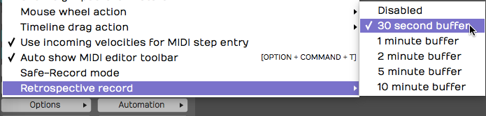
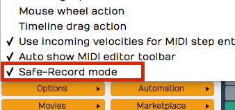

Recording Audio¶
This chapter shows you how to record your own instruments and vocals into Waveform: how to set up track inputs, and how to use the built-in metronome as a reference click to keep your recordings in time.
Configure the Input¶
Set up your audio interface first, as described in Audio Device Setup.
⚠️ Warning: Before you record, run Auto-Detect with a hardware loopback so that new recordings line up with existing tracks, and run it again whenever you change your interface or buffer size. See Calibrating Input Latency Compensation.
The Input Object¶
The input section sits at the far left of every track. Each track has an input object that looks like a rectangular arrow pointing right.

Track Input Object
💡 Tip: If you don't see the input objects, click the eye button at the top right of the Edit tab and click the inputs button (the small tag icon to the left of the track names) in the panel that opens, or press Shift + F12.

Show/Hide Inputs button (A) in the eye button panel
Click an input object for a menu of options, and choose which hardware input this track records from. You can choose No input or any input on your audio interface. In the picture it's set to Input 1.

Input Menu
The input menu also has these items:
- Route audio from track / Route MIDI from track: record the output of another track instead of a hardware input.
- Live Input Monitoring: the input's monitoring mode (see Live Input Monitoring).
- Record enable: arms or disarms this input, like the R button.
- Record enable all: arms or disarms every input (see Enable Recording for All Inputs at Once).
- Default Audio Device Follows Selection / Default MIDI Device Follows Selection: when on, selecting a track that has no input gives it the default audio or MIDI input. (Default: on)
- Assign all inputs to consecutive tracks: see Setting Up Inputs for Multi-track Recording.
- Number of inputs on this track: see Number of Inputs.
Once you've chosen an input, the input object shows the input name, a live input meter and the record arm R button, and the input's full set of properties appears in the Actions panel.

Input Controls & properties
Customising Input Names Globally¶
You can give inputs friendlier names than the defaults with the Device Alias property.
To change an input's alias, open Settings > Audio Devices. Select an input in the Input Channel Groups list and edit the Device Alias name in its properties.
You can also edit it from the Edit: select an input and change Device Alias in the Actions panel. It is the same setting either way, so the new name applies to every Edit, not just the current one. For example, you could name an input after the microphone plugged into it.

Customised Input Names Using the Device Alias Property
Input Properties¶
Select an audio input to see its properties in the Actions panel:
Channels: The set of device channels this input uses.
Input Monitoring Mode (Choices: On, Auto, Off): Whether the input is played through Waveform. See Live Input Monitoring. (Default: Auto)
Input Gain: Gain applied to the input signal before it's recorded, from -12 to +12 dB. (Default: 0 dB)
Trigger Level: Recording waits until the input reaches this level, from -51 to 0 dB. At -50 dB or below, recording starts straight away. The Close Gate button next to it lets you audition the trigger level. (Default: -50 dB)
Time Adjust: Shifts newly recorded clips to correct for latency, from -500 to +500 ms. Click Auto-Detect... to measure it (see Calibrating Input Latency Compensation). (Default: 0 ms)
Device Alias: The name shown for this input (see above).
Record Mode (Choices: Overlay newly recorded clips onto edit, Replace old clips in edit with new ones, Don't make recordings from this device): What happens to existing clips when you record over them. (Default: Overlay newly recorded clips onto edit)
Filename: The pattern used to name new recordings. It can contain
tokens such as %edit%, %track%, %date%, %time% and %take%.
Reset Filename puts the default pattern back.
File Format and Bit Depth: The file type and bits per sample for new recordings. (Default bit depth: 24-bit)
Use the Same Properties for All Devices: When on, changes to these settings apply to every audio input.
The large meter at the bottom is described in Input Meters.
About MIDI Inputs¶
The input menu also lists MIDI interface inputs. Waveform doesn't have separate audio and MIDI tracks: any track can hold Audio clips or MIDI clips. Set the input you need and insert the right kind of plugins.

MIDI Devices on the Inputs Menu
A track behaves like an audio track if you set an audio input, and like a MIDI track if you set a MIDI input and insert a virtual instrument plugin.
Setting Up Inputs for Multi-track Recording¶
Choose Assign all inputs to consecutive tracks from the input menu to give each input its own track, one after another. This sets you up for multi-track recording in one step, which helps when you record a live performance through a digital mixer with a lot of inputs.

Assign All Inputs from the Input Menu
Number of Inputs¶
You can set up more than one input on a single track, up to four. Choose Number of inputs on this track from the input menu and pick 1-4.

Assign up to Four Inputs to One Track
If you record with more than one input armed, you get a separate clip for each, stacked on the track.
This is handy when you audition microphones and preamps: set up several recording chains on one track, then arm the input you want to try. To switch to a different mic and preamp combination, arm a different input.
📝 Note: Normally an input can only be on one track at a time. In Waveform Pro, turning on Allow inputs to appear on multiple tracks PRO in Settings > General lets one input feed several tracks, and adds Assign this input to consecutive tracks to the input menu.
Enable a Track for Recording¶
To enable (arm) a track for recording, click R on the input object. The R lights up to show that the track is armed.

Input Armed for Recording
Test the input signal: play a note on the guitar, or have the singer sing something into the microphone. The meter on the input should move. If it doesn't, check the input level on your hardware, and make sure phantom power is on if the mic needs it.
💡 Tip: Once recording has started you can still click R to enable and disable recording on the fly, for manual punch-in and punch-out recording. This video explains Punch In/Out on the Fly.
Hit Record¶
With the input set up, click Record (R) in the transport bar to start recording. Waveform draws the waveform on the track as you record. Press the Space bar to stop.
Recording always starts at the cursor position. The other ways to stop or abandon a recording are described later in this chapter.
💡 Tip: By default you still hear the existing clips on a track while you record onto it. For tape-style recording, where they go silent, turn on Mute track contents whilst recording PRO in Settings > Advanced. It's available in Waveform Pro.
Enable Recording for All Inputs at Once¶
When you record many inputs at once, you can arm all the tracks together with Record enable all (Cmd + R / Alt + R) in the input menu. You can also use it during recording to start and stop recording without stopping the transport.
Input Meters¶
Click an input to select it. The Actions panel shows a large meter, which is a good guide when you set the input level.

Large input meter in the Actions panel
💡 Tip: As a rule of thumb, set the input level so that it hovers around the middle of this meter's range. Adjust it with the gain controls on your audio interface or preamp.
To see large meters for all the tracks at once while you record several inputs, press F12. Waveform switches to "big meters" mode and draws a very large meter over each track.

Big Meters Mode
📝 Note: The big meters hide the clips on the tracks, so turn them off again (F12) when you aren't recording.
Dragging the Input Object Track to Track¶
You can drag an input object from one track to another. For example, say you recorded something on track one and now want to record something else with the same microphone on track two. Drag the input object from track one to track two, and the input is set up there straight away.

Dragging an Input to Another Track
Renaming a Track¶
To rename a track, click the track name, then edit the Name property in the Actions panel. A quick way is to click Name, press Tab and start typing. The new name is set as soon as you tab away from Name or click elsewhere in Waveform.
Recording Steps in Review¶
To test your recording setup:
- Arm the track or tracks for recording by clicking R on the track input.
-
Make sure Loop is turned off in the transport bar.
📝 Note: Waveform supports loop recording, which is covered in Loop Recording.
-
Rewind the cursor to the start of the Edit with the rewind button (Home) in the transport bar.
- Check that Click (C) is turned off in the transport bar for now.
-
Click Record (R) in the transport bar, and play or sing into the input.
📝 Note: As you record, the meters move and the waveform starts to draw on the Audio clip.
-
Press the Space bar to stop recording.
- Rewind, then press the Space bar to play back what you just recorded.
💡 Tip: If a take isn't going well, press Abort or Abort & Restart in the transport bar. These buttons only appear during recording.

Abort and Abort & Restart During Recording
Working with the Click¶
An audible timing reference often helps while you record. Waveform's built-in metronome gives you a steady click for this.
Enabling the Click¶
To enable the metronome click, turn on Click (C) in the transport bar. Its settings are in the Click menu: open it from the main menu at the top of the window, or right-click the Click button in the transport bar. The options are:

Click Settings
Click: Turns the click on or off, the same as pressing C or clicking the Click button in the transport bar.
Click volume: Sets the volume of the click, from -14 dB to 0 dB.
Count-in: Starts the click a little before the cursor position when you record, so you have time to get into the groove before you play. Choose the count-in length from Click > Count-in: None, 1 bar, 2 bars or 2 beats.
With count-in enabled, you hear the click during recording. If the cursor is at the beginning of the Edit, you hear the count-in and then the cursor starts moving. If the cursor is not at the start, it jumps back by the count-in length and plays from there.

Count-in Options
Click during playback: To hear the click during playback as well, tick Click > Click during playback. With it unticked, you only hear the click while recording.
Emphasize downbeats: Enable Click > Emphasize downbeats to hear the downbeat of each bar clearly. Waveform then uses a different sound for the first beat of each bar.
Click sound: To change the click sounds, choose Click > Click sound.... This opens the Click Track Settings dialog box, where you can choose the audio files for the normal and emphasised beats. Leave the File properties blank to use the default sounds.

Configuring the Click Sound
You can also play the click on an external MIDI sound module. If you do, set the MIDI note numbers in the Click Track Settings dialog box.
Click output device: To send the click somewhere other than your main speakers, choose Click > Click output device.... By default this is set to (Default audio output). You can pick any audio output on your system, or any MIDI output. A MIDI output should lead to a sound module of some sort, and you set the note numbers as described under Click sound above.
Listening on Headphones While Recording¶
Ideally, you monitor what you're recording through headphones, and set the level and mix on your audio interface rather than in Waveform. Most audio interfaces let you mix your live input with the playback of earlier tracks, using the interface's own mixer to balance the two.

Audio Interface Mix Knob
Simple audio interfaces have a mix knob that blends the inputs (your mic) with playback (the tracks you've already recorded). For a vocal, for example, set the knob about halfway: half of what you hear is the live mic, and half is playback from Waveform.
Some audio interfaces have no mix knob on the front panel. Instead they come with an application, run alongside Waveform, that has a virtual mixer. You use it to set up your headphone mix separately from the recording software.
Live Input Monitoring¶
Sometimes you need to monitor the input through Waveform rather than through your interface. The two main cases are playing through virtual instruments, and playing through virtual guitar amps while you record. Those are covered in MIDI Recording and Using an Amp Simulator Plugin. To try live monitoring:
- Turn off any direct (hardware) monitoring on your audio interface, so that anything you hear comes through Waveform. Then set up a track, arm it for recording, and play something into the input with a mic, guitar or other instrument.
- Select the input and find the Input Monitoring Mode option in the Actions panel. You can also set it from the input menu, under Live Input Monitoring. On always plays the input through Waveform, Auto plays it only while the input is armed for recording, and Off never does. (Default: Auto) With On or Auto and the track armed, you should hear the input going through Waveform and back out to your speakers (or headphones).
The downside is latency: a delay between when you play or sing a note and when you hear it in your headphones. At high buffer settings it sounds like an annoying slapback echo. At lower buffer settings it can sound hollow when you sing with headphones on. When you play an instrument, you might not notice anything at all.
To hear the effect of latency clearly, turn the buffer size up to 1024 or more. You'll hear a noticeable delay between when you sing, speak or play a note and when you hear it.
📝 Note: Latency is more of a problem for singers than for guitarists and other instrumentalists. Your voice reaches your ear through your skull with no latency at all. Mixed with a slightly delayed copy through the interface and software, it can sound hollow or "phasey." This isn't recorded, but it can put you off while you perform.
So use live input monitoring when you need it, for guitar amp simulators and virtual instruments. For ordinary vocal and instrument recording, your audio interface's zero-latency monitoring is usually the better choice.
If at First You Don't Succeed¶
With a track armed, click Record and play. Press Record a second time (or the Space bar) to stop. If you don't like the take, select the Audio clip and press Delete or Backspace, or press Undo (Cmd + Z / Ctrl + Z) to undo it. Then rewind and try again.

Recording in Process
Abort Record and Delete the Take¶
The quickest way to throw away a failed take is Abort recording, discard takes. With a single keystroke (F4) it stops recording, discards the take and puts the cursor back where recording started, ready for another try. The Abort button in the transport bar does the same thing.

Abort Buttons on the Transport During Recording
Abort recording, discard takes, restart does the same, then drops straight back into recording. During recording it appears in the transport bar as the Abort & Restart button. Its default shortcut is Ctrl + Alt + R on Windows; on a Mac it has none, but you can assign one in Settings > Keyboard Shortcuts.
Recording a Stereo Signal¶
To record a pair of microphones or a stereo source such as a keyboard, make the input stereo on the Settings > Audio Devices page. Under Input Channel Groups, click the Channels button on the input's row and choose Stereo (or Mono to go back). Layouts with more than two channels need Waveform Pro or the Surround Expansion. You can also pick which channels an input uses from its Channels property. See Channel Groups for more on the device settings.
You now have one stereo input in place of two mono ones, and it appears in the Edit when you choose a track's input.

Making an Input Stereo
Recording from a stereo input gives you a stereo clip that shows both the left and the right waveforms.
Retrospective Record¶
Sometimes a practice take is the best one, or a singer comes in with a pickup just before the downbeat you started recording on. Retrospective record keeps a recording buffer running for every track that has an input set up, so you can get that audio back.
Retrospective record is on by default, with a 30 second buffer. To change the buffer size or turn it off, choose Options > Retrospective record from the main menu and pick Disabled, 30 second buffer, 1 minute buffer, 2 minute buffer, 5 minute buffer or 10 minute buffer. The 30-second buffer is usually enough to save chopped-off pickups or endings. For live shows or speeches, set it to 10 minutes.

Enabling Retrospective Record
To recover the audio, click the Retrospective Record button in the transport bar (it is hidden while you are recording). Waveform adds the buffered audio and MIDI as clips on the right tracks. If you click Retrospective Record while the transport is still running, the audio lines up with the timeline. If you click it with the transport stopped, the audio is placed at the cursor, and you need to line the clip up yourself.

Click the Retrospective Record Button
Retrospective record uses very little CPU, so you can leave it on as a safeguard.
Safe-Record Mode¶
For shows, long recordings, or any time you leave your computer recording unattended, turn on Safe-Record mode (Options > Safe-Record mode).

Safe-Record Mode
In Safe-Record mode, you start recording in the normal way, but as soon as recording starts Waveform shows the Safe-Record dialog box. You can't do anything in Waveform, including stopping the recording, until you enter the four-key shortcut.
To stop recording in Safe-Record mode, press Shift + Opt + Cmd + R / Ctrl + Shift + Alt + R.

How to Exit Safe-Record Mode
These are the default keys, and you can change them to any other combination you like.
Moving On¶
Next, Recording Overdubs walks through recording a simple song, overdubbing new parts on top of a drum loop.